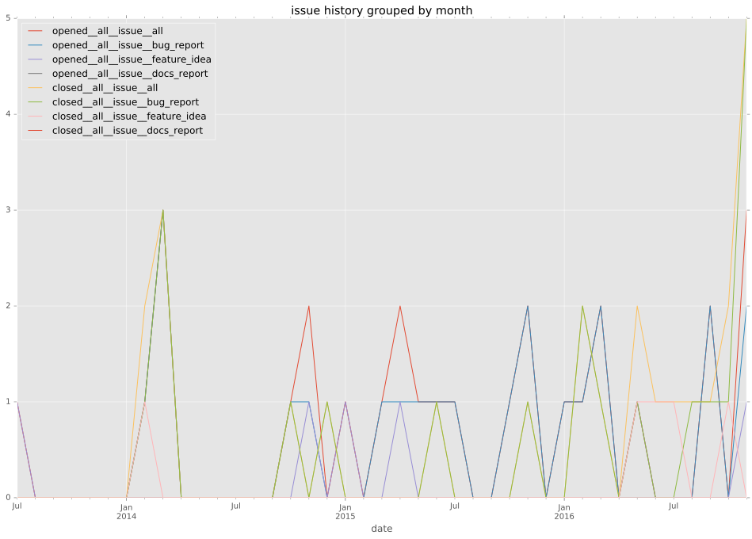
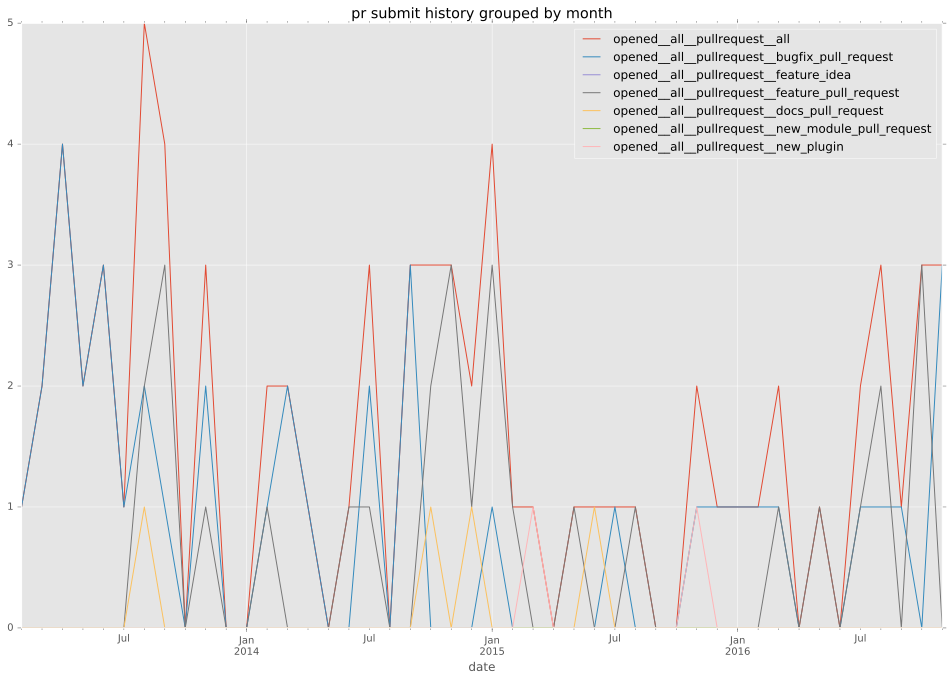
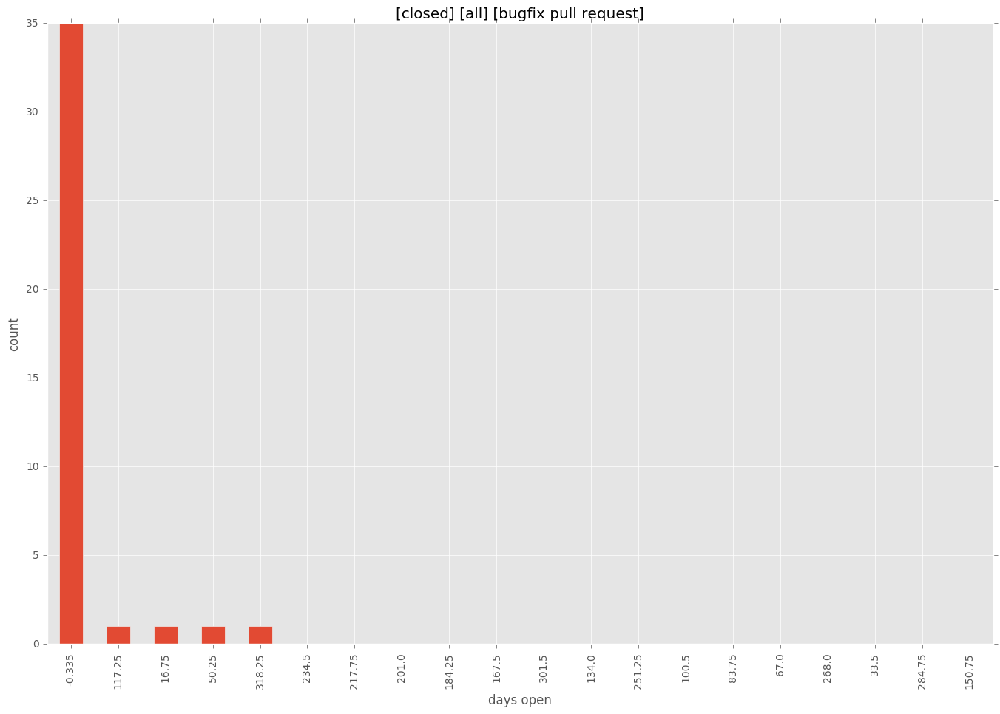
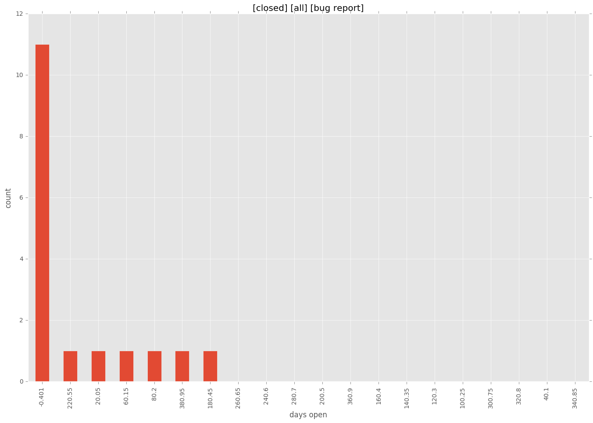

authors
- jsmartin
maintainers
- tedder
- ryansb
contributors
- tedder : 67 commits
- ryansb : 19 commits
- psvo : 9 commits
- Rob-Johnson : 9 commits
- adamchainz : 8 commits
- bpennypacker : 5 commits
- smiller171 : 4 commits
- semifocused : 4 commits
- mpdehaan : 4 commits
- jimi-c : 4 commits
- haraldsk : 4 commits
- jpmens : 3 commits
- bcoca : 3 commits
- abadger : 3 commits
- robbwagoner : 2 commits
- billwanjohi : 2 commits
- Constantin007 : 2 commits
- thisdavejohnson : 1 commits
- mikeputnam : 1 commits
- lwade : 1 commits
- likwid : 1 commits
- jctanner : 1 commits
total issue counts
bugfix pull request: 42
docs report: 1
pullrequest: 81
docs pull request: 6
feature pull request: 32
feature idea: 4
issue: 26
new plugin: 1
bug report: 21
issue history

pullrequest history

days open by issue type
feature pull request
count: 44
std: 83.8536774254
min: 0
max: 266
median: 46.0
mean: 78.1590909091
all
count: 136
std: 109.13685119
min: 0
max: 544
median: 4.0
mean: 54.3529411765
pullrequest
count: 0
std: nan
min: nan
max: nan
median: nan
mean: nan
docs pull request
count: 11
std: 1.97253874256
min: 0
max: 5
median: 1.0
mean: 1.90909090909
docs report
count: 0
std: nan
min: nan
max: nan
median: nan
mean: nan
bugfix pull request
count: 59
std: 48.8704677525
min: 0
max: 335
median: 1.0
mean: 12.4745762712
feature idea
count: 4
std: 172.171184194
min: 198
max: 544
median: 541.5
mean: 456.25
issue
count: 0
std: nan
min: nan
max: nan
median: nan
mean: nan
new plugin
count: 1
std: nan
min: 328
max: 328
median: 328.0
mean: 328.0
bug report
count: 17
std: 111.146829226
min: 0
max: 401
median: 4.0
mean: 61.3529411765
closures grouped by total days open

